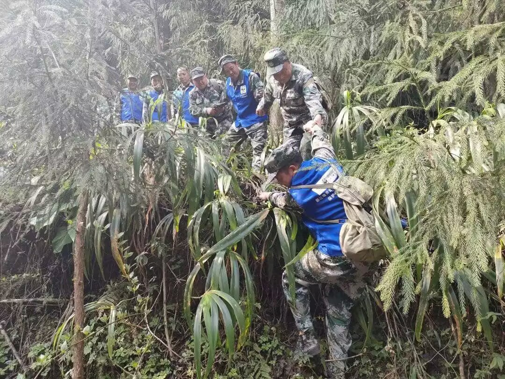
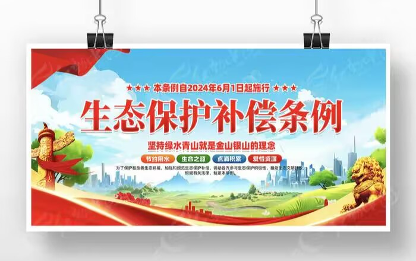
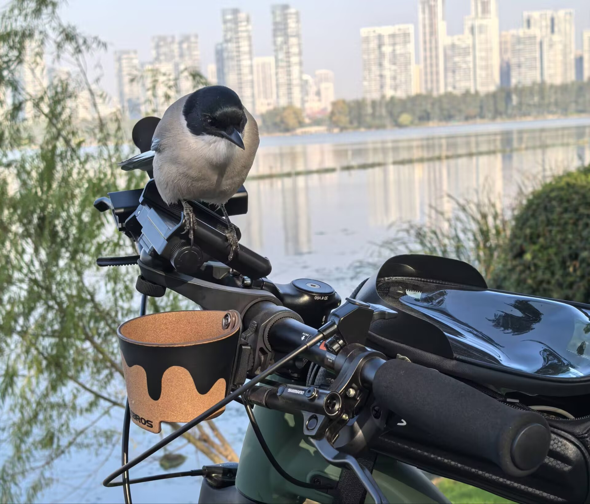

羽翼守望者


许多自然保护区周边的社区，过去依赖狩猎和伐木为生。通过培训转型为巡护员、导游或生态管护员，既能增加收入，又能守护鸟类。例如，在云南，部分村民组建“护鸟队”，自发巡护黑颈鹤越冬地，有效减少了干扰。
社区参与还包括监测鸟鸣、标记巢箱、救助伤病鸟等活动。公民科学项目如“观鸟记录中心”已积累海量数据，为科学研究提供了宝贵资料。

建立生态补偿机制，让社区从保护中直接受益，是激励参与的关键。例如，湿地生态补偿金发放给周边农户，作为放弃围垦的补偿。
社区共管委员会是有效模式，由村民、保护区管理局、地方政府和NGO共同协商管理计划，兼顾生态保护与社区发展。

观鸟生态旅游为社区带来可观收益，但需合理规划，避免过度干扰鸟类。通过培训当地向导、制定观鸟准则，可实现可持续发展。
📖 参考文献：点此处 查看 IUCN 社区保护指南。